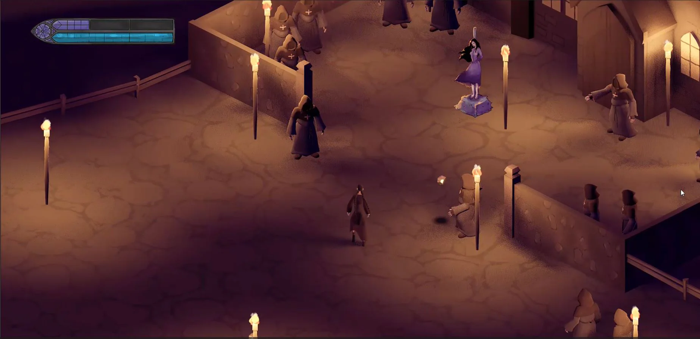
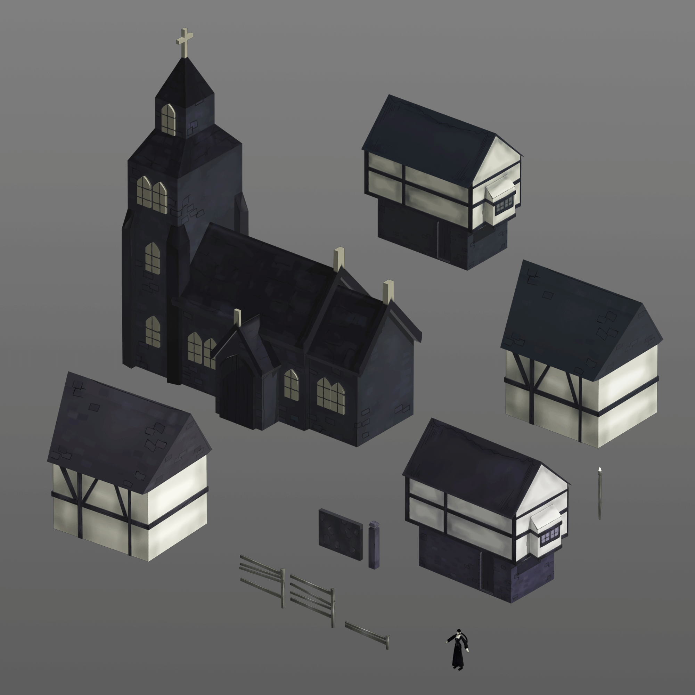
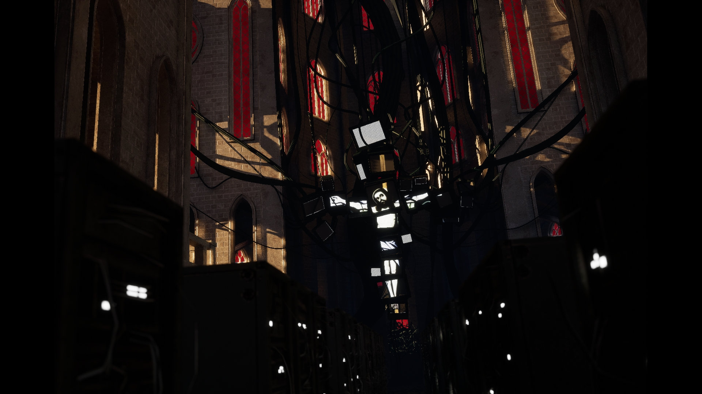
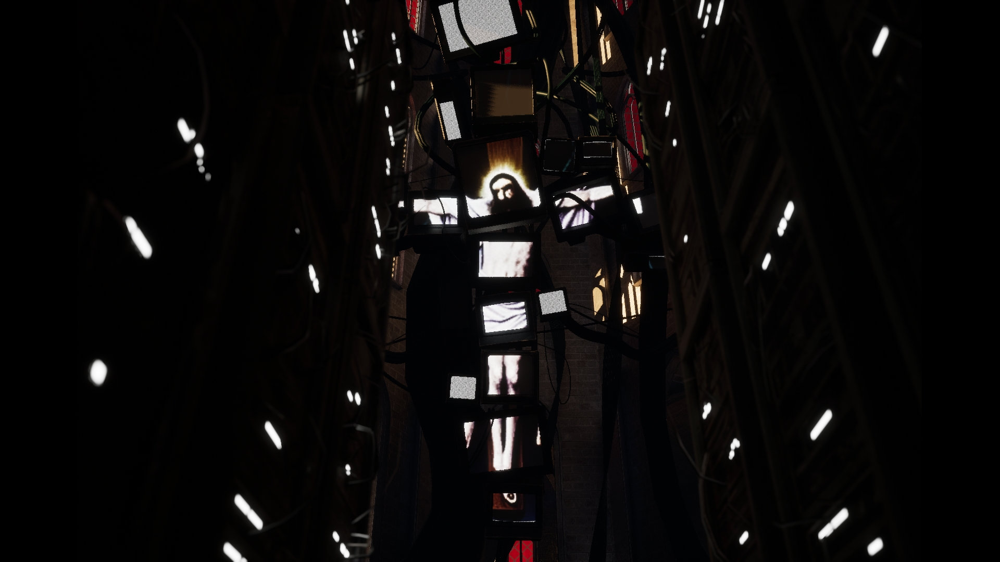
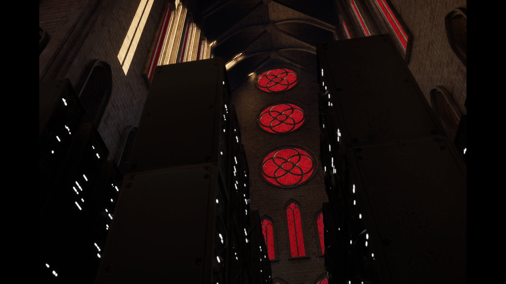
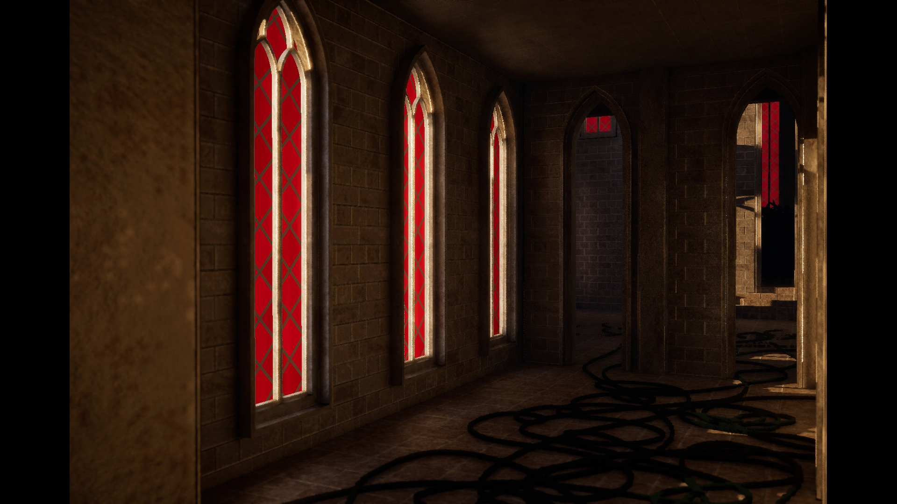
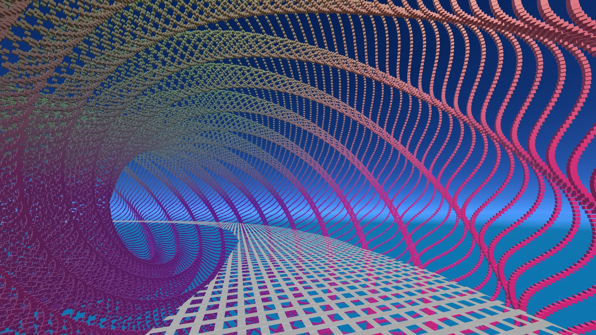
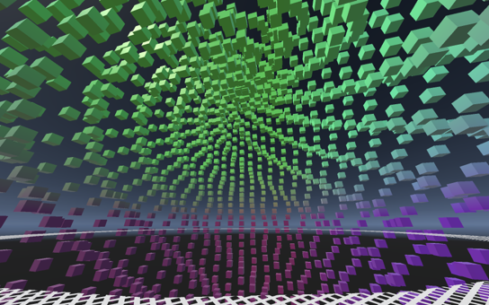
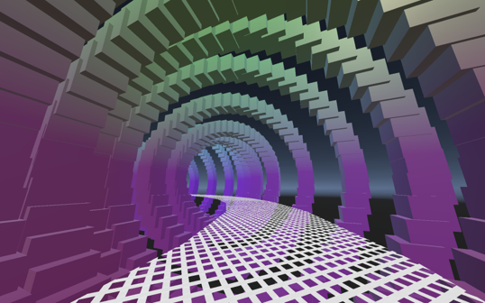
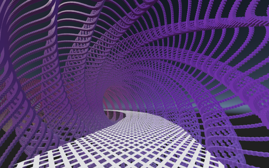

Before The
Sun Rises
Before the Sun Rises is a bullet hell style game set during
the medieval witch hunts. Your sister, a presumed witch, was taken from her bed during the
night and set to be burned at the stake. It is up to you to move and dash to your sister
Bridgid,
evading the mob as they try to stone you on your path.
I developed this game with Natasha
Spinelli. We followed Situational Game Design
theory to ideate and develop the game over the course of 4 weeks. I was responsible for the
programming while she handled asset creation. We collaborated on the
game and narrative design. All the visual assets in the game are 100% original.
Play Here
Tools
Godot, GD Script, Maya, Substance Painter

We wanted to do an action game inspired by some of our favorite Hack and Slash games. We thought
an Isometric style was the most achievable style of such a
game, but we narrowed the scope of the game to focus on movement and dodging give to the feeling
of thrill without a full combat system.
This project taught me the importance of clear communication and understanding
the full 3D asset integration pipeline by working directly with a 3D artist.


Parousia

Created in response to the zeal surrounding artificial general intelligence (AGI), Parousia is an explorable
virtual environment set in a Gothic church converted into a data center. Server racks replace the pews,
cables flood the floor, and the air hums with fans and machine beeps. The building runs a single altar: a
disheveled cross of CRT televisions, enshrined by a mass of wires, showing images of Christ generated by AI
in real time. Parousia serves as a cultural observation on how alike the thirst for a savior has become
across faith and technology. Some await AGI as a second coming, while others preach it will end the world.
Meanwhile, people turn to chatbots for confession. Some, in a state of psychosis, venerate them as prophets,
their delusions affirmed by a machine that feeds them what they want to hear. Where does faith end and
delusion begin? Jaafar and Spinelli draw on our long cultural fascination with machine consciousness and
question why we look for divinity in what we build. Visitors are invited to wander among the servers and
contemplate what they are waiting for.
Tools
Unreal Engine 5, Blender, Maya, Python, ComfyUI
Team Members
Natasha Spinelli: Design and 3D modelling of the cross centerpiece



Ringo WorldStarr

Ringo WorldStarr is a looping level showcasing a bunch of animations and environments which are
fully procedurally generated. The experience has you walking inside a torus which is pulsating,
morphing, and shifting hues in a psychedelic manner.
The morphing shapes are math functions, where every point is a cube, animated by using time as an
input. I wanted to make something psychedelic and mesmerizing to walk through. Theres 6
different functions/shapes here changing dynamically. With up to half a million particles
animating in real time, the experience can be played at high framerates with no issues on modest
hardware.
This project was the product of an independent study into visual shader authoring, focusing on
the
transition from CPU-based logic to GPU-driven compute shaders within Unity and Unreal Engine.
By deconstructing mathematical surfaces—specifically the parametric geometry of the Torus—the
study explored how low-level HLSL and buffers can be used to create high-performance,
procedural environments.
Tools
Unity, ShaderLab


